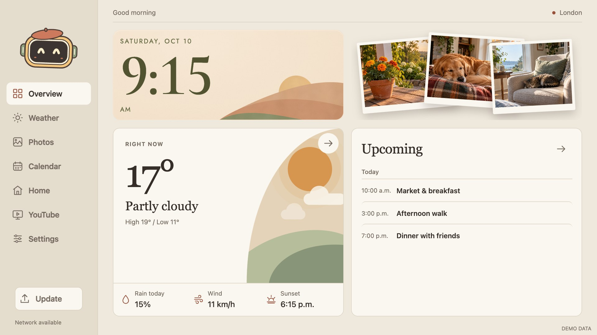
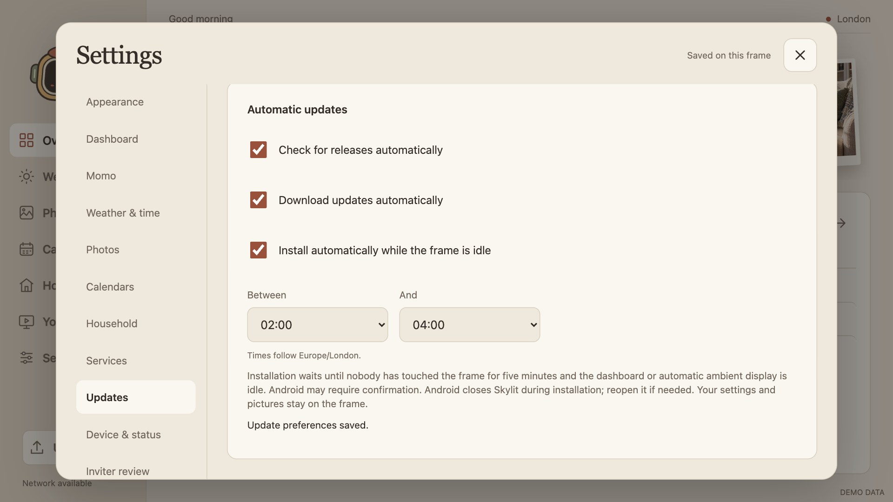
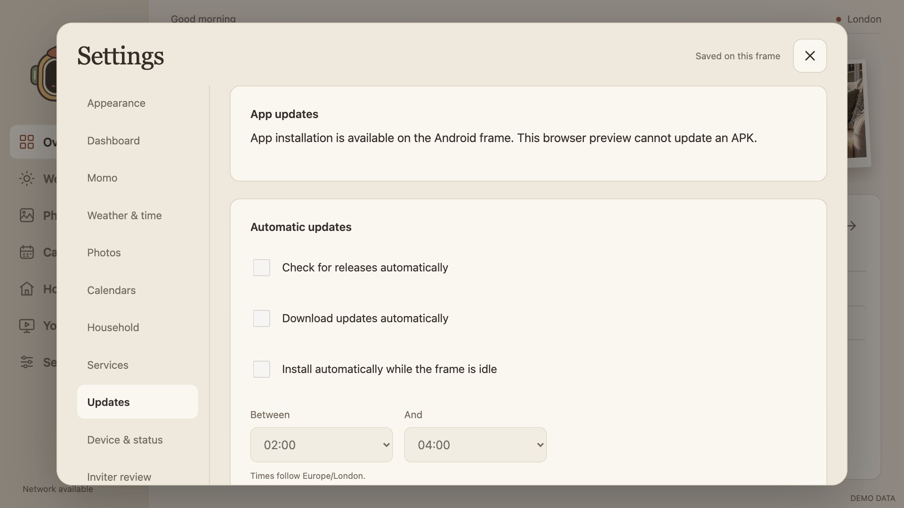
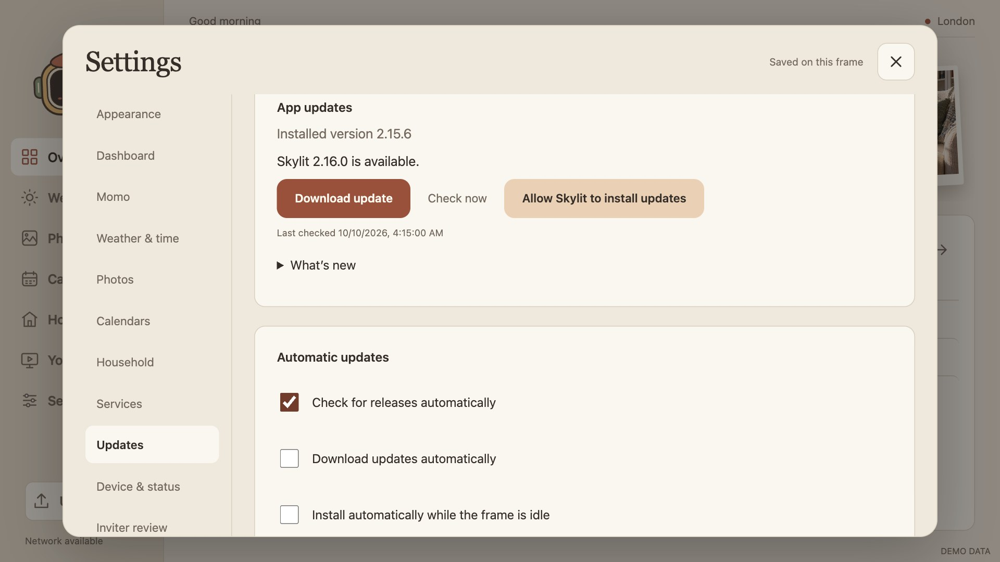
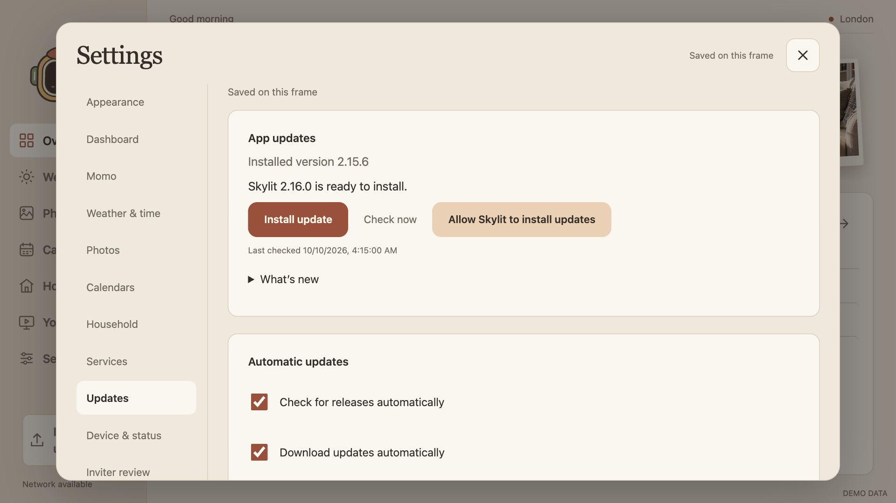
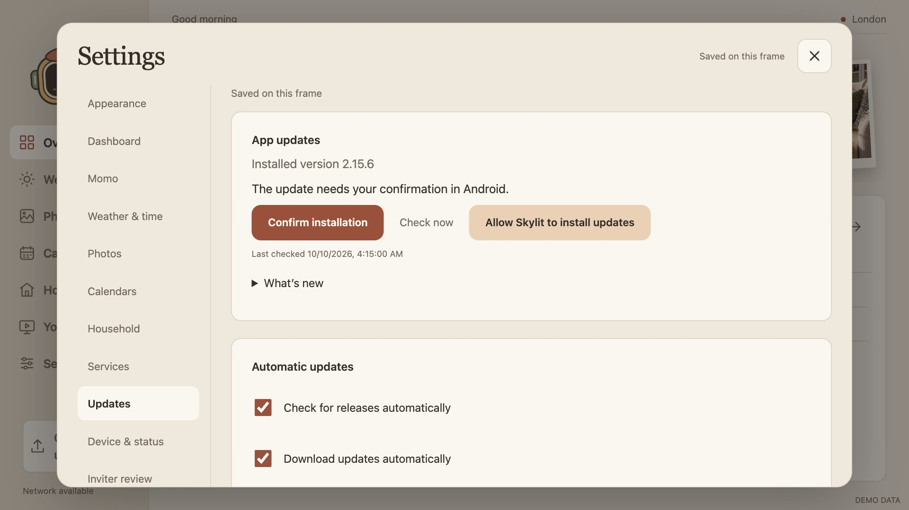

Signed updates.
A live dashboard editor.
The dashboard editor now shows the real widgets while you drag and resize them. Signed APK updates have a native GitHub release path, a conditional sidebar action, and automatic update controls in Settings.
Implementation and synthetic acceptance complete Android installation acceptance pendingAll images below use allowlisted synthetic preview assets. Updater screenshots simulate native status; they do not show a completed Android download or installation. No household data is included.
One draft, three tools
A palette of nine widgets
Drag a palette card or its touch grip into empty canvas space, or tap to add and arrange automatically. Clock & date, Weather, Photos, Upcoming events, Hourly forecast, Note, Shopping list, Countdowns and Timers retain their existing data sources.
The actual dashboard, live
The canvas uses production CSS, current widget content, warm clock artwork and the same responsive sizing. It updates during a drag or resize; invalid placements are outlined. A single pointer gesture is one undo transaction.
Precision when you need it
Select a widget for row/column/width/height and clock style. Arrow keys move; Shift + arrows resize. Undo and Redo cover geometry, palette additions, removals, presets and styles.
Save is the commit point
Preview changes stay separate from the saved dashboard. Save applies them; Discard restores the saved layout. Removing a widget preserves its underlying photos, calendars and Household data. Failed storage writes keep the current dashboard intact.


How the preview avoids duplicate services
The canvas is a script-free, same-origin sandboxed document. The parent copies current widget content into it and renders the clock using the shared tick. There is no second weather fetcher, calendar controller, mailbox connection or photo player. Its controls are pointer-inert; the editor overlay owns interaction.
A signed release reaches the frame
Quiet until an update is useful
The sidebar action appears for an available or ready release, or when Android needs confirmation. Release notes and detailed status live in Settings → Updates. Notes are plain text.
Independent automatic controls
Automatic checking defaults on; automatic downloads and installation default off. Installation enables its prerequisite options. The owner chooses a city-timezone hour window, including windows across midnight.
Updates wait for the frame to be idle
Five minutes without touch, a recent activity heartbeat and foreground eligibility are required. Settings, manual photo browsing and remote services defer installation. Automatic slideshows and quiet ambient displays remain eligible, so their earlier idle timer cannot permanently postpone an opted-in update.
Android’s confirmation fallback
Allow Skylit to install packages once in Android’s app-specific settings. Android 12 permits qualifying self-updates without user action, but the frame’s actual behavior remains untested. If confirmation is requested, the sidebar becomes Confirm update.


What is needed to start using updates?
Install the first updater-enabled APK, 2.16.0 or later, once with the existing signing key. Then future releases can be fetched by the app. Publishing main does not create a release: the signed APK and matching metadata must be published together. No GitHub token, backend, root access or signing key on the frame is required.
Android closes the old process during installation. Reopen Skylit if HOME does not restore it. A same-package, same-signature upgrade keeps app data; actual post-install return and data preservation still need frame acceptance.
Release preparation and trust boundaries
Normal builds produce the APK and metadata. The release helper requires clean, pushed main and an APK built from that source commit, verifies actual APK badging/signature/hash, then runs public source/history/APK checks and Gitleaks. It prepares a draft by default; publication is explicit. Personal APKs and household configuration never enter this pipeline.
The native updater accepts only this repository’s exact HTTPS release paths, bounded GitHub responses and APKs up to 64 MiB. Redirect hosts are allowlisted. It verifies the downloaded APK again immediately before installation and rejects a different signer, package or non-increasing version code. The callback receiver is not exported and checks the installation session.
Update behavior and hardware acceptance · Release procedure · Android installation requirements
Landscape composition at different sizes
Preview screen changes the logical widget area, rather than stretching a screenshot. The same draft is recomposed at 16:9 and 16:10 sizes. Palette and inspector scroll independently; Expand canvas temporarily hides them and Settings navigation. Short/narrow screens may scroll Settings, while the actual Overview stays within landscape screens.
The 960 × 540 canvas is necessarily smaller with all tools visible; Expand canvas provides a quieter working area. The 44px resize grip remains usable regardless of preview scale. Visual review found and corrected Save-row occlusion; the acceptance check now verifies that the canvas bottom can be hit directly.
What passed, and what remains
| Evidence | Result |
|---|---|
| JavaScript unit tests | 87 passed, including update status normalization and existing app behavior. |
| Python / production Java policy tests | 18 passed, including update URLs, signer-independent policy boundaries, scheduling, release metadata and packaging/privacy. |
| Full app browser acceptance | 32 groups passed; first-run/upgrade guide routes, affected tabs, themes and geometry; no runtime errors. |
| Dashboard browser acceptance | 23 groups passed; minimum/full module sizes, layouts, collision/cancellation, saved data and persistence. |
| Clock browser acceptance | 76 groups passed; four styles, sizes/text profiles, animation and shared time rendering. |
| New editor/updater browser acceptance | 12 groups passed; live content, resize/undo/redo, palette drop, ratios, canvas expansion/occlusion, updater actions and escaped notes. 19 synthetic screenshots. |
| Normal Android APK | 2.16.0 · code 35 · package com.wesbos.homehq · one verified signer, existing key retained. |
| Source/history/APK privacy and Gitleaks | Zero public-data findings; Gitleaks source export and all-ref history scans report no leaks. |
| Physical frame | Paired wireless frame unreachable. No install or device settings change performed for this version. |
Required Android acceptance
Verify a real release download and rejection of tampered/wrong-signer APKs; install permission and manual confirmation; opted-in idle install and touch deferral; post-update HOME return; private settings/media and onboarding preservation. Test on the exact paired device without uninstalling or clearing app data. Successful browser fixtures do not establish those outcomes.
Delivery verification · Screenshot manifest and focused acceptance groups
All 19 screenshots
Select an image to open the original. Every photo, weather value, calendar event and updater release state shown here is synthetic.





